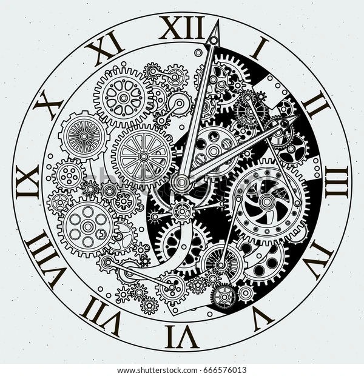

ランゲ1は、1994年に発売された復興第一弾モデルのなかで最も注目を集めた、A.ランゲ&ゾーネの復活を象徴する名作です。
オフセンターに配置された二つのインダイアルとパワーリザーブ・インジケーター、それにアウトサイズデイトで構成されたダイアルは、視認性が高く合理的です。
黄金比で構成されたデザインは、全てが計算されつくされた完璧なモデルと言えます。
ランゲ1のデザインに、時計界の3大複雑機構の1つであるトゥールビヨンと言う、時計の向きが一定でなくても重力の影響を受けずに高い精度を保つ機能の付いたモデルは、1000万円を超える代物で、一度実物を拝めるだけでも相当運が必要な超高級モデルです。

前のページ 次のページ